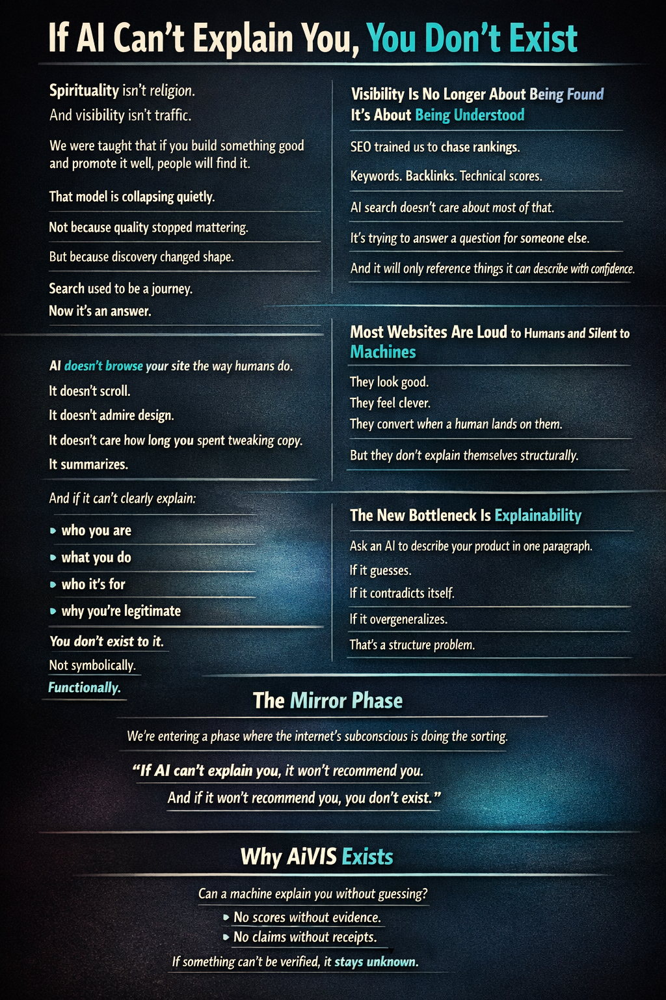
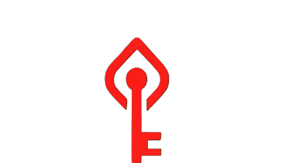

AiVIS.biz
AI Visibility Audit — Evidence-Backed Scores
Review and optimize schema, structure, and trust for AI citation readiness
This public showcase highlights the AiVIS brand, positioning, and visual implementation references without exposing internal scoring logic, model-consistency orchestration, or backend methods.
Curated visual references


